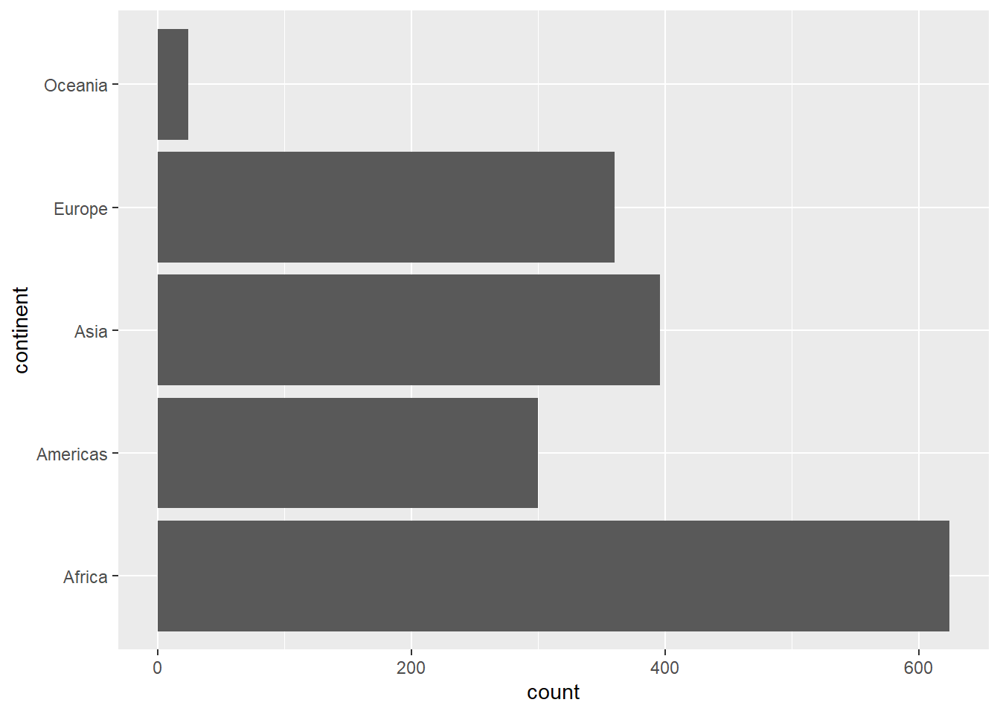
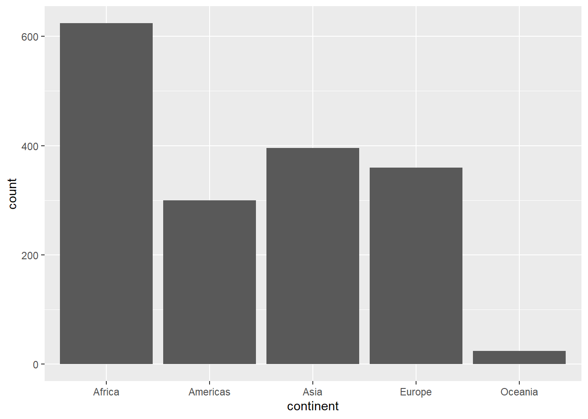
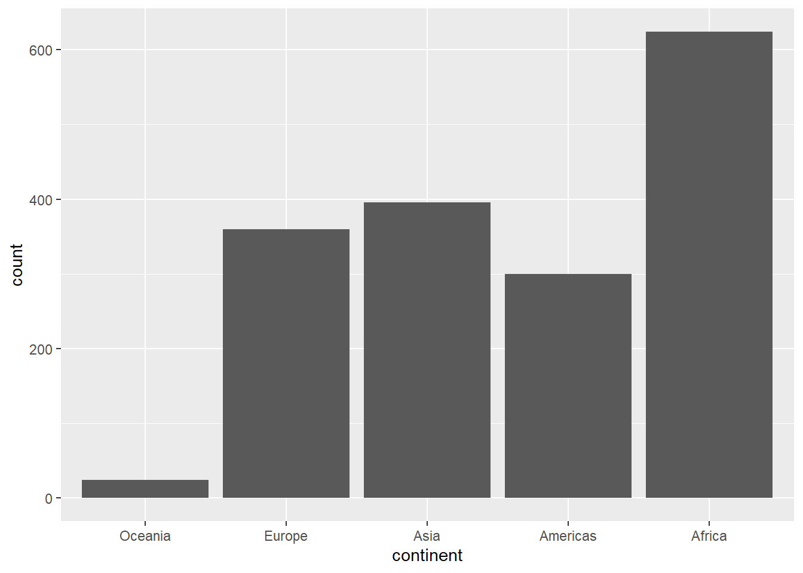
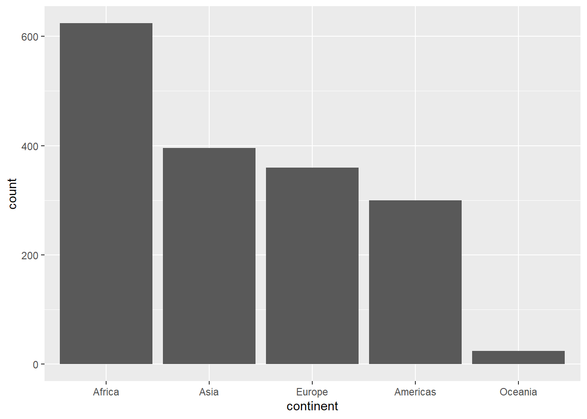
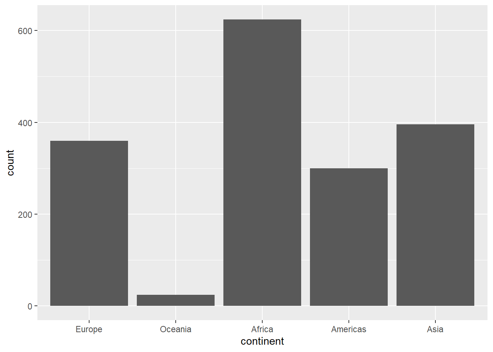
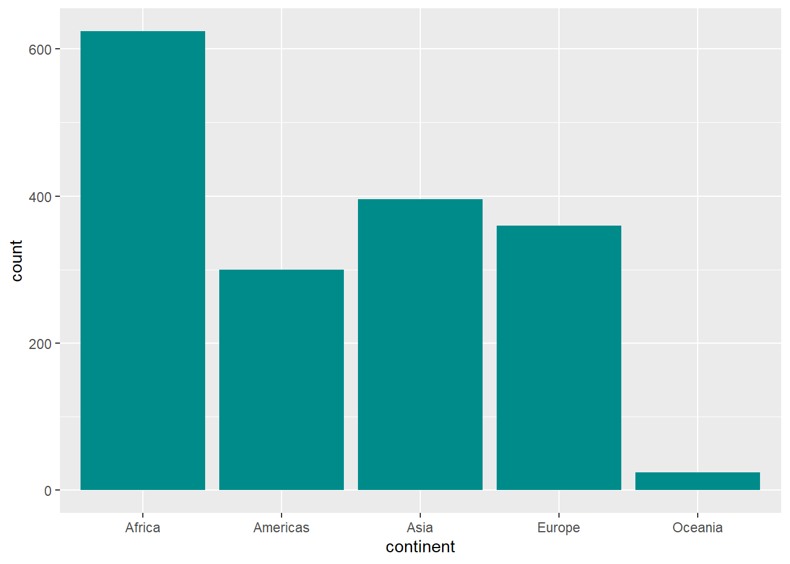
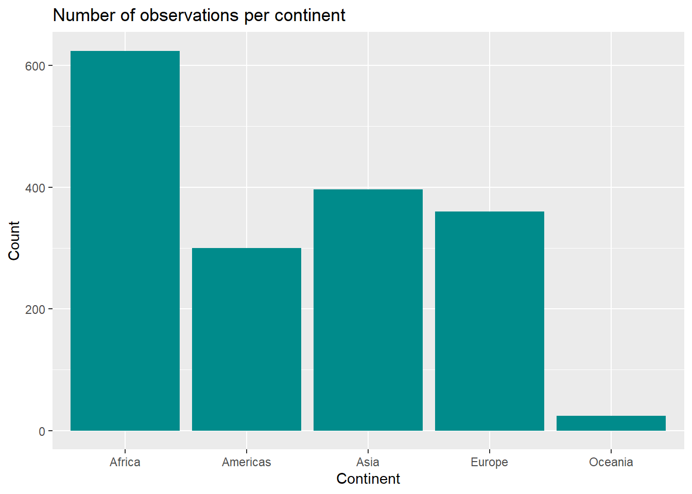

library(dplyr)
library(ggplot2)
library(forcats)
library(gapminder)Tutorial: Specific plots in ggplot
Research Practicum in CSS
This is an experimental version of the tutorial.
If you spot any errors, please let me know in the forum, so I can fix it.
Loading packages and data
First, load the tidyverse and gapminder packages
What are these packages for?
dplyr: data manipulation and transformation (e.g., filtering, summarising, changing columns).ggplot2: data visualizations.forcats: handling and reordering of categorical variables (factors).gapminder: provides a dataset of global economic and demographic trends for practice and exploration. More on gapminder project here.
Explore the data
Examine the gapminder object.
Take a glimpse() into its contents:
Hint
glimpse(nameofdataset)
Solution
glimpse(gapminder)Rows: 1,704
Columns: 6
$ country <fct> "Afghanistan", "Afghanistan", "Afghanistan", "Afghanistan", …
$ continent <fct> Asia, Asia, Asia, Asia, Asia, Asia, Asia, Asia, Asia, Asia, …
$ year <int> 1952, 1957, 1962, 1967, 1972, 1977, 1982, 1987, 1992, 1997, …
$ lifeExp <dbl> 28.801, 30.332, 31.997, 34.020, 36.088, 38.438, 39.854, 40.8…
$ pop <int> 8425333, 9240934, 10267083, 11537966, 13079460, 14880372, 12…
$ gdpPercap <dbl> 779.4453, 820.8530, 853.1007, 836.1971, 739.9811, 786.1134, …1. Bar charts
Now, let’s take a look on how many observations per continent we have in the dataset.
Remember that every ggplot call starts with:
ggplot(data = data, mapping = aes(___)) +
geom_*() +
additional callsSince we want to make a bar chart, there are two geom_*s we can choose from. Either geom_bar() or geom_col(). They both serve the same function but require different aesthetics.
geom_bar() vs geom_col() ?
geom_bar()requires specifying only what goes into one of the axes (xORy) of the plot. It calculates the frequency of each category for you for the number of rows per category in your data.geom_col()requires specifying bothxandyaxis. This means that your dataset should already have a column with frequencies (or other metric that you want to show, such as percentage, rate, or median).
Let’s say that we want to quickly check the number of observations per continent. Because our data does not have any column that would indicate the frequency of each continent, we need to use geom_bar() to calculate it for us.
Solution with
geom_col()
As we mentioned before, geom_col() expects we already have a column with frequencies or other values we want to plot. We can get our data into the required shape by calling count()
gapminder |>
count(continent)# A tibble: 5 × 2
continent n
<fct> <int>
1 Africa 624
2 Americas 300
3 Asia 396
4 Europe 360
5 Oceania 24Now that the data has a new column called n, which holds the counts of rows per continent, we can use geom_col():
Horizontal bar chart
To make our plot horizontal, we can make a quick adjustment. Replace the ___ with y. This will map the continent column to the y axis instead of the x axis (which we have done above) and the counts to the x axis.
🧠 Try it out!
Hint
Replace the _ with y.
Note
ggplot(gapminder, aes(y = continent)) +
geom_bar()
Tricky parts in “easy” plots - reordering
Notice that our plot is ordered alphabeticaly - this is the default ordering in ggplot. In vertical bar charts, bars are ordered alphabetically from left to right. In horizontal bar charts, bars are ordered alphabetically from top to bottom.
ggplot(gapminder, aes(x = continent)) +
geom_bar()
What if we wanted to change the order of bars based on their counts? We can do this with the use of the forcats package.
If we call glimpse() on our dataset, we can see that continent has a class of fct. This means that it is a factor variable. A factor variable in R is used to represent categorical data with a fixed number of unique values, known as levels.
We can see the levels of the continent column by calling the levels function:
Order by frequency
Should I always reorder bars based on frequency?
No! You should only reorder your bars if they represent nominal variables, which have no inherent order (e.g., types of fruits, names of countries). Reordering nominal variables by frequency or another metric can help make your data easier to interpret.
However, if your bars represent ordinal variables — variables with a meaningful, inherent order (e.g., Likert scales such as Very Good > Good > Bad > Very Bad)—the original order should always be preserved, even if it doesn’t follow the category’s frequency.
To order our bars by frequency, we can call the fct_infreq() function on the continent column.
Do I have to call
fct_infreq() in mutate() before plotting?
Not necessarily. The code will still work if you do the reordering directly in ggplot. Try it out!
Reverse order
To reverse the order of the previous bar from descending to ascending, we can call fct_rev(). Note that you need to first order your bars based on frequency with fct_infreq() and only after that you can reverse the order!
Why does the order of
fct_* functions matter?
Let’s see what happens if the order is reversed and we first reverse the order, and then sort it by frequency.
We start with this plot:
gapminder |>
ggplot(aes(x = continent)) +
geom_bar()
In the second step, we reverse the order of continent:
gapminder |>
mutate(continent = fct_rev(continent)) |>
ggplot(aes(x = continent)) +
geom_bar()
In the last step, we sort the bars by frequency:
gapminder |>
mutate(continent = fct_infreq(fct_rev(continent))) |>
ggplot(aes(x = continent)) +
geom_bar()
This way, we would end up with the bar chart in descending order again!
Move things around
Lastly, we may want to move some bars around. In this case, it does not make a lot of sense but it may come handy - we can also move our bars manually. In this case, we can move “Europe” to the front.
We can also move more than one bar at a time. This can be done by adding another category to the fct_relevel() function.
🧠 Try it out!
Move “Oceania” next to “Europe”.
Hint
gapminder |>
mutate(continent = fct_relevel(continent, "Europe", "nameofcategory")) |>
ggplot(aes(x = continent)) +
geom_bar()
Solution
gapminder |>
mutate(continent = fct_relevel(continent, "Europe", "Oceania")) |>
ggplot(aes(x = continent)) +
geom_bar()
Changing colors
Change the color of all the bars to cyan4. In the previous tutorial, we worked with a scatterplot. When we wanted to change the color of the dots in our plot, we used color to do this.
This is not what we expected! What happened? In ggplot2, the color aesthetic applies to the outlines of shapes, while fill applies to the insides of shapes. In our case, the color = "cyan4" created a thin outline around the bars.
Color vs fill?
For points (e.g., in scatterplots), the shapes typically have only an outline, so
coloris used to define their appearance.For bars (e.g., in bar plots), the interior is the primary visible feature, so
fillis used to color them.
🧠 Try it yourself
Knowing the difference in how R treats outlines and interiors of geoms, change the code so the bars are filled in the cyan4 color.
Hint
geom_bar(fill = ____)
Solution
ggplot(gapminder, aes(x = continent)) +
geom_bar(fill = "cyan4")
Quick note on colors in R
There are more than 650 pre-defined named colors in R, such as various shades of red, blue, cyan, coral, etc.! You can see some of them here.
{kind=link}
Additionally, R comes with multiple color pallettes:
RColorBrewer::display.brewer.all()
Alternatively, you can also use Hex codes to get exactly the color you want - see more here.
Label the plot
🧠 Try it yourself
Add labels (title, x and y axis) to the plot.
Hint
Use the labs() function.
If you’re unsure how to proceed, consult the first tutorial.
Solution
ggplot(gapminder, aes(x = continent)) +
geom_bar(fill = "cyan4") +
labs(title = "Number of observations per continent",
x = "Continent",
y = "Count") 
2. Histograms and density plots
A histogram is a plot that shows the distribution of a continuous variable by dividing it into intervals (bins) and counting how many observations fall into each bin. Unlike bar plots, which display counts or values for categorical variables, histograms represent frequencies or densities of continuous data.
🧠 Try it yourself: Data wrangling
Filter the data, so we only work with data from year 1952
Hint
Use the filter() function from the dplyr package.
Solution
gapminder_filtered <- gapminder |>
filter(year == 1952)Make a histogram of lifeExp using the data you have created in the previous step. For histogram, we need only one aesthetic - the variable that will be plotted, in our case, lifeExp.
Binwidths
An important feature in a histogram is its binwidth. Binwidth determines the width of each bin (interval) used to group data points. It plays a crucial role in how the data distribution is visualized:
Too small binwidth: Creates many narrow bins, leading to a noisy and overly detailed plot that can obscure overall patterns.
Too large binwidth: Uses fewer, broader bins, oversimplifying the data and potentially hiding important features of the distribution.
🧠 Try it yourself
Play around with the Select the binwidth slider (below the histogram) to see how different binwidths change the interpretation.
Density plot
A density plot is a smoothed visualization of the distribution of a continuous variable, estimating its probability density function. Unlike histograms, which use bins, density plots provide a continuous curve, making it easier to see patterns and compare distributions.
🧠 Try it yourself
Change the code below from a histogram to a density plot (R: geom_density().
3. Boxplots and violins
A boxplot is a graphical representation of the distribution of a dataset that highlights its key summary statistics: the median, quartiles, and potential outliers. It shows the spread and symmetry of the data, with the box indicating the interquartile range (IQR) and “whiskers” extending to data points within 1.5 times the IQR. Outliers are plotted as individual points.
In R, we can use the geom_boxplot() function.
Seeing the distribution of life expectancy for all countries and years is nice, but it is not very informative. So let’s improve our graph.
We can make boxplots of life expectancy by continents by mapping continent to one of the axes.
Reordering.. again!
Sometimes, we may want to reorder categories in a plot, for example, arranging continents so that the one with the lowest median life expectancy appears first, and the one with the highest median appears last.
To achieve this, we can reorder the continent column with fct_reorder() before passing the data into ggplot.
This involves specifying:
Which column to reorder:
continentThe column to use for ordering:
lifeExpThe statistic to base the ordering on:
.fun = median(default for fct_reorder, so we could omit this part in the code below).
Outliers visibility
We can also change the appearance of outliers. Type ?geom_boxplot into your console and find out how to change the size and opacity of outliers. Experiment with different options.
Alternative to boxplots: Violin plots
A violin plot is a visualization that combines aspects of a boxplot and a density plot, showing both the summary statistics and the distribution of a continuous variable.
BONUS: Adding observations to boxplots or violins
Sometimes, you may want to add individual observations on top of boxplots or violin plots to provide additional detail by showing the raw data points. This is often done using geom_jitter() (essentially a geom_point with added “noise” to prevent overplotting) or geom_point() (for direct plotting). Overlaying observations helps identify patterns, clusters, or outliers that may be hidden by summary statistics alone, offering a richer view of the data.
🧠 Try it yourself
Experiment with the code below: You can e.g., change the alpha parameter or explore the difference between plotting the individual observations with geom_point() vs with geom_jitter().
4. Line plots
A line plot is used to visualize the relationship between two variables, typically with one variable on the x-axis (often time) and another on the y-axis. Points are connected by lines, making it ideal for showing trends, changes, or patterns over time or across a continuous variable.
Let’s make a new object that contains only data for Japan, Korea, Rep., Korea, Dem. Rep., and China, and call it asia.
Following what we’ve learned before, we put year on x-axis, and gdp per capita on the y axis, and call geom_line() to make a line plot.
This does not seem right… What went wrong? We can investigate the relationship between year and gdp per capita with a scatterplot. What do you see?
The “seesawing” effect in the line plot occurs because geom_line() is connecting all the data points for multiple countries into a single line. By default, ggplot assumes all points belong to one continuous series unless explicitly told otherwise. In this case, it connects the GDP per capita values across all years for all four countries together, rather than treating each country as a separate series.
To fix this, we need to group the data by country so that each country has its own distinct line. This can be done by adding a group or color aesthetic.
Changing colors
scale_color_manual()is used to manually specify the colors for the levels of a categorical variable when using the color aesthetic (which is the case in our line plot as we mapped country to color).
scale_*_* functions
In the code above, we can use scale_color_manual because our variable country (which we want to color in a specific way), is mapped to the color aesthetic.
However, if we wanted to change colors in a barplot, we would have to use scale_fill_manual as in this case, the bar colors (their interiors) are not mapped to color aesthetic but a fill aesthetic.
Similarly, if our variable is mapped to shape, we would have to use scale_shape_manual().
Additionally, we may want to change the units or labels on some of the axes. This would be done with scale_x_continuous for an x-axis with continous values, scale_x_discrete for an a-xis with discrete values, etc.
Adding text to plots
Adding text annotations to your data visualizations can enhance clarity and storytelling by highlighting key points, trends, or outliers. It helps viewers quickly grasp important insights without needing to analyze the plot in detail, making your visualizations more accessible and impactful.
One easy way to annotate our data can be adding direct labels. We can add labels to our data with geom_text().
geom_text() will by default inherit any aesthetic that is inside theggplot() call. This specifies where the labels will be placed. We also need to specify where will the label (text) for our annotation come from. In our case, it comes from the n column.
This is a good start but we may want to do some additional changes. The text is awkwardly in the center of the bar. Maybe we want to raise it up or push it down. We can change this with geom_text argument vjust (vertical justification). The size of the text also seems a bit too big. We can change this by modifying the size argument. Both of those options are set for all observations. This means that we have to do it outside the aes() function.
🧠 Feel free to modify the code below to see the difference. You may also want to change the color of the text.
Don’t forget to label your data!
Another common approach, especially when working with line plots, is to highlight certain observations or time periods.
We can start by drawing a vertical line to indicate where a change happened (xintercept marking which point on the axis will the line go through) with geom_vline(). We can also specify the type of line with linetype.
Then, we can add more information with a text. If there is not many things to highlight, we can add it manually with annotate(). Note that the x argument in annotate() determines the center of the text.
🧠 Try to modify the code below to move the annotation around by changing the x and yarguments. You can also try changing the "text" argument for label to see the difference.